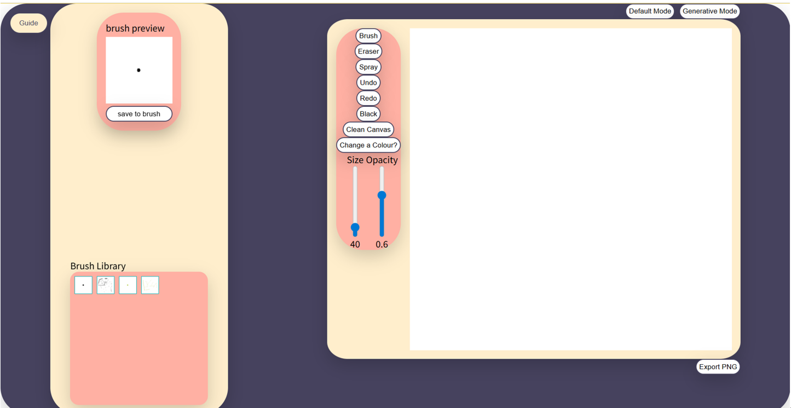
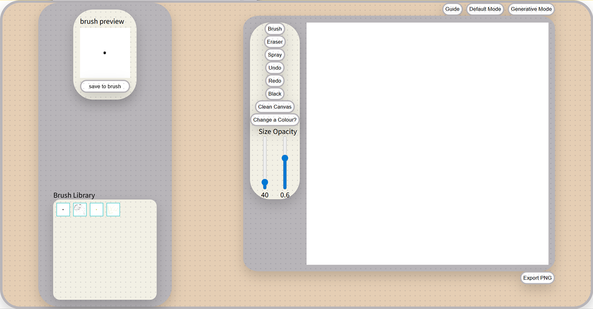
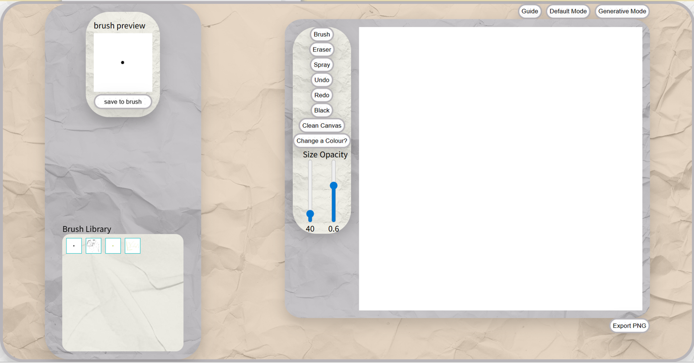
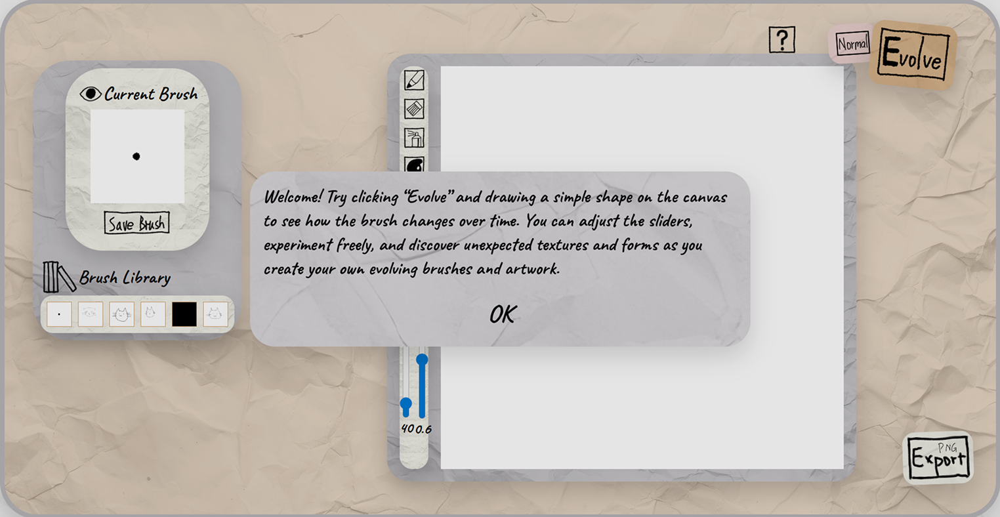
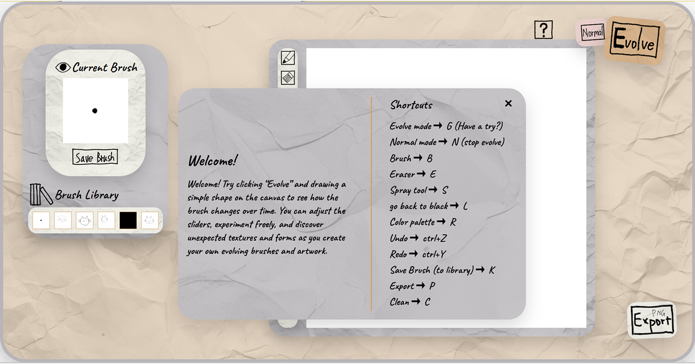
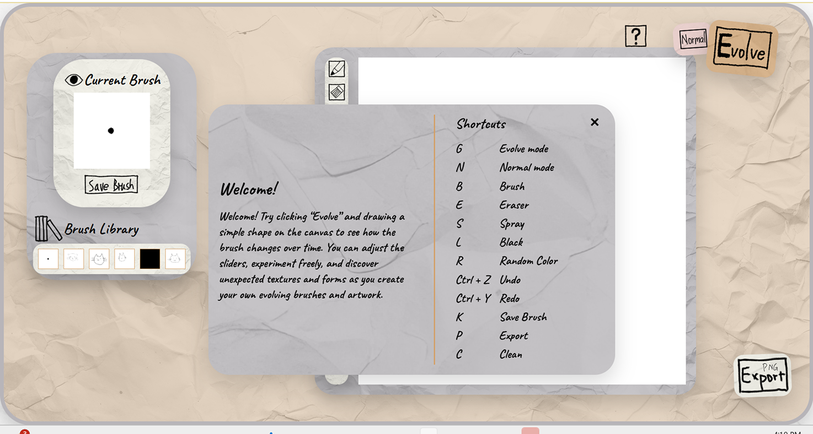
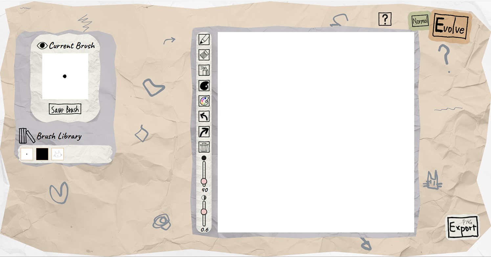
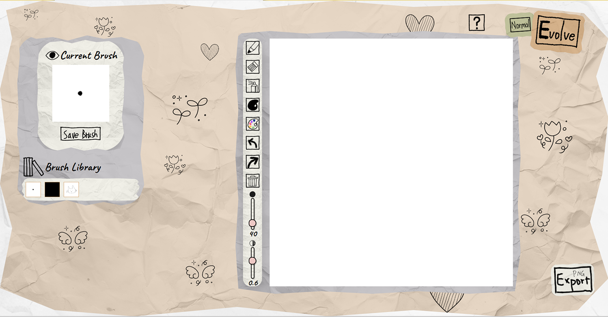
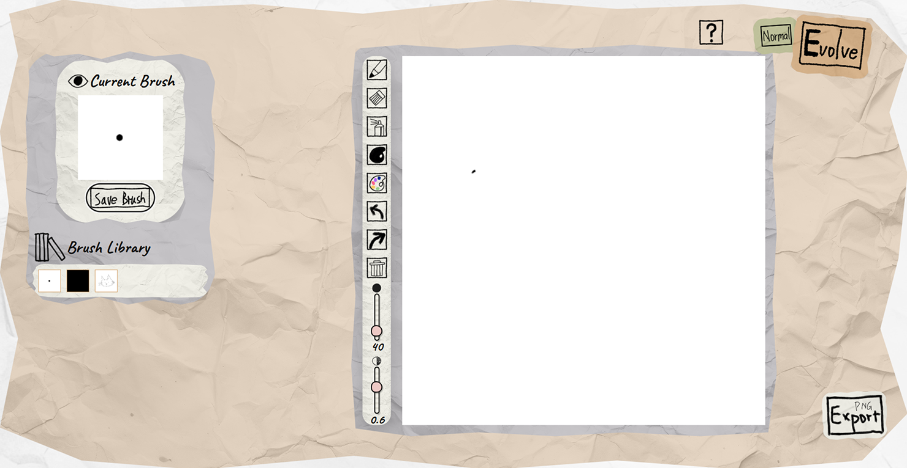

Yulia's studio Work Index
s3847150
Introduction Exercise
Hello, my name is Yulia(she/her). I come from Chengdu, China.
I was in Animation Design. I'm interested in web design and interactive media, so I transferred to digital media.
I don't really have favorite emoji, but I love cat memes.
My familiar expressive software are adobe photoshop and procreate, basically some painting tools.
I did Interactive Media last semester, which provides me some coding experience.
link to my githubIn-class Experiments
Studio Project Speculation
inspiration and function
This project reframes digital brush creation from a technical process into a visualized, playful, and generative process.
The inspiration for this project comes from a screenshot of a post on X, where someone discovered that the brush they were using for drawing was made from an image of a painter’s face.
The main function of the website is that users draw on the canvas, and the patterns they create can be turned into brush shapes. These newly generated brushes can be saved, and users can continue drawing with them to generate new brush patterns. After each stroke, the brush used is replaced by the image created in the previous stroke. The website also allows users to save brushes at any time, so they can reuse previously saved patterns, continue drawing with them, and further generate new brushes from their drawings.
Purpose
- Allow users to create brushes through interaction with the canvas on the website.
- Exploration – allow users to explore visual patterns during the brush-making process.
- The idea of the brush is inspired by bomomo, which provides a variety of brushes composed of simple graphic elements. By clicking on a brush, it generates lines using that brush. During my experience with the website, I explored different brush effects, and the process felt enjoyable. The interaction is very simple and light. However, while creating drawings, I also wanted to have some control over the brush, but it mainly generates patterns randomly, which made me feel a bit limited. Although the generated patterns are visually appealing, the sense of control is relatively weak. Therefore, I want to create a website where users can both experience the process of brushes generating and have a certain level of control over the brush. Users should be able to explore and create within this system.
Worth
- Approachable — lowering the barrier to creative tools
- Improve usability and efficiency in brush creation
- Empowering and meaningful — allowing users to create their own tools and artwork
- Learnability — enabling intuitive learning through visual interaction
- Making the process enjoyable, engaging, and motivating
WigglyPaint provides a simple tool for creating micro-animations. I really like its brush texture, which maintains a consistent style while still feeling unique. What impressed me is that it uses a single simple rule — making lines move — yet allows users to create stylized works. It makes effects that would normally require professional software much easier to achieve. Similarly, my website aims to simplify brush creation through a clear interface and interaction, making it easier for users to create and experiment with their own brushes.
Traditional painting software provides static brushes. Although users can create brushes from images, the process is often complicated and not easy to discover. On social platforms, only a small number of users create brushes, while most download or purchase them. This project aims to provide a more accessible way for users to create their own brushes and use them in their artwork. In traditional painting, brushstrokes are an important form of expression, and this tool aims to expand that expressive potential.
Useless Painter, along with tools like WigglyPaint and silk, shows that users feel motivated when they can produce visually interesting results. These tools provide both randomness and a certain level of control, which helps stimulate creativity. In this project, control is reflected in the ability to save brushes at any time. The tool should also support producing usable outputs, such as exporting PNG images that can be reused in other software.
Users should be able to learn the system in an intuitive and visual way. The interaction should remain similar to existing drawing tools,but only keep the core function, allowing users to quickly get started. A dynamic preview window shows the current brush shape, providing immediate feedback. Even without prior experience, users should understand the system after a few attempts. Icons are used where possible to reduce cognitive load, as visual representation is a highly intuitive form of information design.
The tool provides immediate feedback (and potentially subtle sound effects) to create positive reinforcement during the creative process. This encourages users to continue exploring. While I experimented with stronger visual feedback in Experiment 2, I found it may be slightly excessive for a drawing-focused interface.
Framing
- Playful experimentation
I want the tool to have a lively and stylized interface, similar to WigglyPaint and Useless Painter, so that users feel relaxed and motivated while creating. The goal is to encourage users to play with the system rather than feeling pressure to produce a “masterpiece”.
- Exploratory interaction
- Generative creation
I want to explore KonvaJS’s canvas and shape functionalities, and possibly use screenshots to capture the current shapes. Mapping the drawing input as another input for next action. I experiment a mapping mechanism between numbers and colors. It probably can be used to transform coordinate and stroke color.
The tool should support interactive exploration. In Useless Painter, I found that the way information is presented can be slightly confusing, and it took some time to figure out how to control the brush. In this project, users can simply draw freely on the canvas to generate patterns. I will provide a limited set of controls (such as switching between brush and eraser) along with minimal text guidance, allowing users to discover different effects and functions through exploration.
This approach is inspired by silk and the useless web. Silk uses generative patterns to support creation, while The Useless Web highlights the appeal of randomness. In this project, the system responds to user interaction by producing variable visual outcomes, introducing unexpected variations that encourage experimentation. Brush creation itself becomes a form of creative exploration, rather than a technical process. This generative approach also helps users avoid getting lost in complex parameter settings found in traditional brush-making tools.
Assignment2
Conceptual Response
mapping
User input does not only generate visual output, but also reshapes the tool being used. The brush evolves through each interaction, meaning that every stroke affects future outcomes. This transforms the brush from a static tool into a dynamic one, where each output feeds back into the next input.
I chose this approach to encourage users to participate in the making of the tool, rather than simply using a finished instrument. Through interaction and exploration, the tool itself becomes part of the overall experience.
By doing so, the design encourages users to engage creatively not only with the image-making process, but also with the design of the tool itself. It helps them become more aware of the small and initial elements that shape their creation, and gives them opportunities to express their ideas through each subtle detail of the evolving system.
Information Design
The interface provides minimal guidance, encouraging users to explore and discover the underlying logic through interaction.
The target users are hobbyists who enjoy digital drawing. Rather than offering a highly complex or professional brush-making system, the tool adopts a simplified approach that can still generate useful outputs, such as exportable PNG images.
The interface is designed to be playful and relies more on icons than text, supporting intuitive understanding over technical instruction. As drawing itself is a creative and playful interaction, the interface aims to reflect and extend this emotional quality to the user.
As discussed in my earlier work, the project shifts brush-making away from tedious parameter adjustments and highly technical interfaces. By lowering the barrier to entry, it reframes the process as an intuitive, simple, and engaging experience suitable for everyday creative practice.
This approach contrasts with conventional design tools that rely on precise parameter control, instead promoting exploration, accessibility, and creative engagement.
Technical Approach
WireFrame

Flowchart


reference websites
Draw Manually sketching with brush image toDataURL (haven’t used. Plan to use in undo/redo and save to library function) drawImage() method (to draw with resized canvas content.) Adding a spray tool to an HTML5 canvasThe core functionality of this project is to replace continuous stroke rendering with image-based stamping, where strokes are formed by repeatedly placing brush images instead of connected points. Additionally, the current canvas content is used as the brush source.
The implementation is informed by approaches such as “Sketching with Brush Images”. The overall method uses trigonometry to calculate the distance between the start point and end point, and then determines the x and y positions for each stamp along the path. A loop (e.g. z++ or z += value) is used to control the spacing between stamps, resulting in a continuous drawing effect.
To achieve the generative functionality, drawImage() is used to capture and scale down the current canvas content onto a separate, smaller brush canvas (with plans to allow adjustable brush canvas size in future iterations). This smaller canvas is then reused as the brush source to generate evolving visual patterns.
To support the eraser as a creative tool, destination-out is used for erasing, while source-over is used for normal drawing.
For the preview window, a separate canvas is created to render the current brush source. The preview is updated during the mouseup stage to reflect the latest brush state.
For the brush library, the proposed approach is to use toDataURL() to store brush images, push them into an array, and render them as thumbnails using small canvases. This part has not yet been implemented and remains to be tested.
I also plan to implement undo/redo functionality using arrays, with a logic similar to the brush library system.
While experimenting with new ideas—specifically introducing randomness into the brush—I unintentionally discovered a texture similar to a spray tool. I plan to develop this into a dedicated tool within the toolbar.
For the UI, I intend to design custom icons and adopt a hand-drawn visual style. At current stage, different functional areas are distinguished using color blocks.
Peer User Testing
Peer User Testing Form
Form linkPeer User Testing Reflection
Guidance: My original intention was to let users explore how the website works on their own. However, the actual outcome was disappointing. Many users reported feeling confused when they first opened the site, and about half of them did not clearly understand its logic. It seems that the generative mode button and the guidance were not prominent enough, leading some users to miss the need to click it. In future development, I am considering removing the default mode and allowing the generative mode to function directly, or enlarging the generative mode button to make it more noticeable.
Based on feature feedback, almost all users expressed a desire for more functionality. Planned features for future development include:
- Brush library
- Undo/Redo
- Brush/Eraser size adjustment
- Opacity controller
- Color palette
- Eraser pattern variation
About half of the users also noted that the brush pattern is not obvious enough. I am considering adding a spacing adjustment feature, but the challenge is that mousedown and mousemove events can be interpreted as a series of click events, making spacing difficult to control.
In addition, I overlooked an incorrect use of var(), which caused the canvas to turn black when switching to dark mode. This issue will be fixed.
Regarding device compatibility, some users reported multiple bugs, although the website runs well on my Chrome browser. I plan to conduct cross-browser testing to verify performance across different environments.
In terms of UI, I decided to adopt a playful approach. The current prototype lacks a well-developed interface and mainly serves as a structural framework.
Overall, I am very grateful for this user testing, as it revealed many issues and provided valuable direction for future development.
Next Actions
- Implement the planned feature list
- Create final UI sketches
- Improve guidance and learnability (reduce cognitive load)
- Refine UI, including color, style, and icon updates
Project Timeline
Week1 to 3: concept and speculation.
Week 4: wireframe and Prototype(html+css).
Week5-1 : understand and implement reference: Konvajs draw manually.
Week 5-2: understand and implement reference: sketching with image.
Week 6-1: core feature implementation (generative brush).
Week6-2: prototype for A2.
Week 7: Peer User testing and organize documentation.
Week 8-1: brush library implementation.
Week 8-2: start building toolbar features.
Week 9: toolbar features: spray tool, sliders for changing size and opacity, color palette.
Week 10: toolbar features refine, drawing tool button, stylize UI. Responsive system
Week 11: stylized UI refinement, A3
Week 12 to 13: reflection and manage documentation
A2 phase
The project is generally progressing according to plan. However, I spent more time than expected trying to understand Konva and sketching with images—especially the latter—which required me to use the mid-break period to catch up.
After establishing the core functionality, I decided to introduce a preview window at the prototype stage to make the system logic clearer for users. This was not part of the original plan, but I chose to implement it earlier than scheduled to improve usability.
I also spent some time on exploring additional features such as using speed to control spacing. However, it doesn't work well. There's some conflict between the click-stamp system and speed control system. I gave up this idea
Assignment 4
Design Reflection
I successfully developed a brush-making tool with a rich range of functions. The core logic of the tool is that the user's input directly affects the brushes they use afterwards. Based on this main interaction, the project gradually expanded beyond my original plan, and I added several unexpected features such as random colour, undo/redo, and the spray tool.
In terms of functionality, I achieved all of the features I originally planned, while also adding extra support features such as the brush preview and guide modal. These additions helped users better understand the tool, observe the brush changes, and begin the experience with less confusion. Overall, I feel satisfied with the functional outcome of the project.
My judgement of worth contains several aspects. In terms of layout and visual characterisation, I avoided adding too many decorative elements and tried to keep the interface relatively minimal. I used hand-drawn icons and a paper-textured background to lower the psychological barrier of making artwork. My aim was to simulate the relaxed experience of casually doodling on paper, so the website could feel playful, approachable, and easy to start using.
To meet my purpose, the website allows users to create brushes while experiencing how the brushes change through their own actions. The interaction is designed to be intuitive and accessible, requiring users only to draw rather than adjust complex parameters.
I intentionally avoided explaining the full generative logic through text because I wanted users to discover the behaviour of the tool through exploration.
Referring to my previous writing in Assignment 1, all of the functions in the website are designed around brush creation, allowing users to test and develop brushes while immediately seeing the visual results of their own input.
For better learnability, I designed the more conventional parts of the interface, such as function icons, layout, and some keyboard shortcuts, in a way that refers to existing creative software. This allows users to understand the basic functions more quickly and focus their attention on exploring the brush-generation logic. I also used text in a restrained way to explain special functions, and added a guide modal to further support users during the exploration process.
My chosen interaction design principles are mapping and information design. In terms of mapping, the novel aspect lies in the unpredictability of the experience. As I discussed in Assignment 2, the boundary between using a tool and experiencing a tool becomes blurred. However, I introduced this unpredictability in a restrained way. If the result became too chaotic, users might lose their sense of control and feel frustrated. Therefore, the project needed to balance surprise with usability, allowing users to experience uncertainty while still being able to make creative decisions.
The information design aspect was less experimental than the mapping, but it became important during user testing. At first, I wanted to encourage more independent exploration, but I found that too little guidance confused users. To better communicate the functions, I increased the amount of explanatory text. Although many functions are represented through icons, each icon includes a hover tooltip to explain its purpose and reduce the user’s cognitive load. This is a relatively conventional design approach, but it helped make the experimental interaction more understandable.
Design Judgment Exploration 1
My first design judgment exploration focused on the background and colour design of the website. The main question I explored was how to make the interface feel playful and approachable without becoming distracting or visually overwhelming.

In the first version, I kept the bright colour palette from the original prototype and mainly adjusted the interface by adding rounded corners. I believed that the bold colours created a stronger sense of playfulness and energy. However, the overall appearance still felt relatively digital and lacked the relaxed atmosphere I wanted for the project.

In the second version, I introduced a dot matrix texture inspired by dotted notebooks. Compared to the first version, this interface appeared cleaner, more organised, and more minimal. The texture also created a slight cardboard or paper-like feeling, which helped the website feel softer and less technological. However, the interface also became more structured and controlled.

The third version used a crumpled paper texture as the main background. I ultimately chose this version, partly because of user feedback and partly because I personally preferred its visual character. The texture created a more casual and imperfect feeling, which better matched the idea of experimental drawing and playful exploration.
I intentionally kept the texture relatively visible instead of lowering its opacity. I found that interfaces which are too clean or overly structured can unintentionally create pressure for users, while the rougher paper texture made the experience feel more approachable and relaxed. This exploration showed me that users generally prefer a balance between playfulness and clarity, rather than interfaces that are either overly minimal or overly chaotic.
Design Judgment Exploration 2
My second design judgment exploration focused on how to make the guidance system clearer, more approachable, and easier for users to understand. Because the tool contains experimental and unpredictable interactions, I needed to consider how much instruction users required without removing the sense of exploration.
In the earliest version, the starting modal contained several clear step-by-step instructions that explained how users should interact with the tool. My original intention was to make the process easy to understand by giving users direct procedural guidance. However, feedback suggested that this approach felt slightly too instructional and reduced the exploratory atmosphere of the project.

As a result, the first refined version replaced the step-by-step instructions with a more friendly paragraph-style introduction. In this version, the shortcuts were separated from the welcome message and placed inside a guide button. I believed this approach kept the opening guidance simpler and less overwhelming. However, I found that some users did not carefully read the introduction at the beginning, while others wanted a way to reopen the instructions later during the experience.

This led to the second version, which removed the starting pop-up modal entirely. Instead, both the shortcuts and guidance information were placed inside the guide button. I believed this version created a stronger sense of freedom and allowed users to explore the interface more independently. The shortcut design also continued to use arrow-based visual indicators from the previous version, which some users found clearer during testing. However, I discovered that removing the welcome modal completely also made some users feel uncertain about how to begin.

As a result, the final version combined both a starting pop-up modal and a guide button that could reopen the welcome message and shortcuts at any time.
Initially, I worried that this design might feel repetitive or visually cluttered. However, user feedback suggested that the ability to revisit the welcome message actually made the experience feel more reassuring and approachable. I also reorganised the shortcut layout using spacing and alignment to improve readability and clarity. Therefore, I ultimately selected the third version.
Through this exploration, I realised that experimental interactions still require a certain level of emotional reassurance and guidance. While users enjoyed discovering the behaviour of the tool themselves, they also wanted the security of being able to return to the instructions whenever needed. This helped me better understand the balance between exploration, freedom, and usability.
Design Judgment Exploration 3
This exploration focused on how to increase the visual playfulness of the background while still supporting the overall drawing experience. I wanted the interface to feel connected to the idea of sketching and experimentation, but I also needed to consider how much visual detail users could comfortably engage with.

In the first version, I added several hand-drawn doodles that I created myself. These marks contained loose brushstroke, making the interface resemble a sketchbook or rough draft page. Some users strongly preferred this version because they felt it was more playful, expressive, and visually interesting. Personally, this was also my favourite version. However, a small number of users reacted negatively to the doodles and even expressed the desire to erase them. This made me realise that drafted visual elements can also create discomfort or distraction for some users.

The second version replaced the loose hand-drawn doodles with more organised image-based decorative elements. Compared to the first version, this background appeared cleaner and more controlled while still maintaining a playful atmosphere. Most users preferred this version because it felt visually comfortable without becoming too empty or chaotic.

The third version removed the doodles entirely and only kept the textured background. I initially believed this version would create the cleanest and most minimal experience, and I strongly considered choosing it. However, most users described the interface as feeling too empty and visually uninteresting. This result surprised me, because I originally assumed that reducing visual noise would improve the experience.
Ultimately, I selected the second version. Although I personally found it slightly less expressive than the first version, it created a stronger balance between playfulness and visual clarity. This exploration showed me that users generally prefer interfaces that contain controlled visual personality rather than either extreme minimalism or chaotic draft. It also reminded me that my own aesthetic preference as a designer does not always align with the most comfortable user experience.
Timeline Reflection
I developed the project by following the timeline established in Assignment 2 and found that it worked well overall. After completing the implementation of the brush library in Week 8, which I had originally expected to be quite difficult, I was able to complete some of the tasks planned for Week 9 earlier than expected. As a result, the entire timeline moved forward considerably.
During Week 9, I completed the design of the icons and integrated them into the user interface, while also making small adjustments to the functionality. Characterisation took much more time than I had anticipated. Both Week 10 and Week 11 were largely spent refining the characterisation of the tool and conducting repeated rounds of user testing. Throughout the process, new ideas emerged and were incorporated into the project. Most of my documentation was recorded alongside the coding process as the project developed.
Proud
The aspect of the project that I am most proud of is the range of functions I designed for the tool. At the beginning of the project, I did not expect it to develop into such a feature-rich experience.
Some of the most successful features emerged unexpectedly during production rather than being part of the original proposal. For example, while experimenting with ways to increase the unpredictability of the brush behaviour, I accidentally produced a spray-like effect. Rather than treating this as a mistake, I recognised its potential and decided to develop it into a dedicated tool, expanding the variety of drawing options available. I then spent additional time refining and improving the spray tool.
The random colour function followed a similar process. Originally, I intended to create a traditional colour palette. However, as the project developed, I became increasingly interested in introducing unpredictability into the drawing experience, which eventually led to the random colour feature. I selected suitable palettes from Lospec and deliberately chose muted, softer colours rather than highly saturated ones. I wanted users to feel relaxed and comfortable while using the website, rather than being overwhelmed by bright or visually chaotic colours.
Because there are few universally recognised icons that directly represent random colour generation, I chose to use a colour palette icon instead. This suggests colour variation while allowing the randomisation itself to remain a small surprise within the experience.
During my own testing, I discovered that brushes in Evolve Mode gradually became darker and increasingly difficult to control. Reflecting on my original intention, I realised that I wanted users to experience unpredictability without completely losing control over the tool. This led me to separate the system into two different modes, allowing users to choose between stability and unpredictability depending on their preferred creative process.
Ultimately, the project evolved into a feature-rich brush-making tool that can genuinely support artistic creation rather than functioning only as a technical experiment. I am very satisfied with this outcome. I have also used the tool to create several interesting artworks and received a considerable amount of positive feedback from others. One encouraging outcome was that many users highlighted the unpredictability of the tool as one of its most interesting features in their feedback.
One aspect that surprised me during development was how challenging characterisation, responsiveness, and learnability became throughout the project.
Characterisation
In terms of characterisation, I chose to use a layout that was similar to professional creative software because I wanted users to feel familiar with the interface and learn the functions quickly. However, this also created a challenge. Since the overall structure already resembled existing software, I needed to spend additional time introducing personality and playfulness in other ways.
To achieve this, I added subtle animations, intentionally positioned some interface elements using absolute positioning, and slightly tilted certain buttons to create the feeling of overlapping pieces of paper. I also introduced irregular edges and paper textures to reinforce the handmade and playful character of the tool. Compared to my original expectations, I spent much more time refining these details than I had anticipated.
Responsiveness
These characterisation choices also created a number of responsive design challenges. Because several interface elements relied on absolute positioning, I needed to continuously adjust the size and placement of buttons and canvas elements across different screen sizes.
Maintaining a responsive square canvas was particularly difficult because the preview system depended on a consistent aspect ratio. As a result, I needed to manage both the actual drawing canvas and the visual layout canvas simultaneously.
Overall, I spent approximately one week refining the responsive behaviour of the interface. Although this process was technically demanding, it significantly improved the usability of the final project.
Learnability
Learnability also proved more challenging than I initially expected. Because the tool contains randomness, two different modes, and a range of functions, some users struggled to immediately understand the core idea during testing.
As a result, I spent considerable time refining the welcome message, guide system, shortcuts, and tooltips. Through this process, I realised that experimental interactions require a careful balance between exploration and instruction. Too much guidance can reduce curiosity, while too little guidance can create confusion.
Contrast to peer's creative tool
Another aspect of the course that influenced my thinking was observing the work of my peers. One project that left a strong impression on me was Crop-llage. What impressed me most was its learnability. The interface contained very little text, yet users could quickly understand how to use the tool through interaction alone. Observing this project made me reflect on my own design decisions and consider how simplicity itself can become an effective form of communication.
Another project that left a strong impression on me was Sketchy Sketch Sound. What interested me most was its approach to mapping. User input was not only translated into visual output, but was also connected to different sounds and musical qualities. The project creatively combined visual and auditory feedback into a single experience.
It also encouraged me to think more broadly about how different sensory outputs can be connected through interaction design.
Another idea that stood out to me was the way the creative process itself became visible within the final outcome. I noticed that several projects allowed traces of the user's creative journey to remain present in the result. This is something I would like to explore further in future iterations of Brushloom. For example, allowing users to review the evolution of their brushes over time could increase their awareness of the generative process and strengthen the overall experience.
I also observed that some peers used animated guidance systems rather than relying heavily on written instructions. This demonstrated how motion can communicate interaction more efficiently than text and is something I would like to explore in future projects.
In terms of stylization, I encountered a wide variety of website styles. Some of them were visually beautiful and closely matched my personal interests. I asked several classmates about their sources of inspiration, and many of them drew ideas from paintings and other forms of artistic practice. Perhaps next time, I will also use visual references and image-based inspiration to help shape the style and aesthetic direction of my website.
Overall, this project allowed me to develop not only my technical skills, but also my understanding of the design process. Through the development of Brushloom, I explored different ways of balancing unpredictability, control, and learnability within an interactive experience. The challenges I encountered throughout the project helped me better understand how design decisions shape the relationship between users and creative tools.